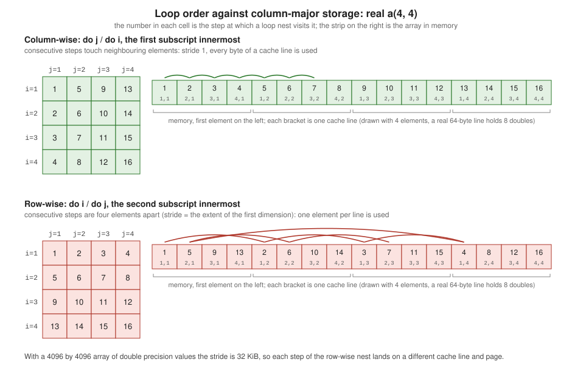

Performance and Memory Layout
|
This content was generated with the assistance of AI and should be verified against the official documentation before being relied on in production. |
This page is written against Fortran 2023 (ISO/IEC 1539-1:2023, J3/23-007r1) and was checked on 2026-10-19. Every example
was compiled with gfortran -std=f2023 -Wall -Wextra -pedantic -fimplicit-none -fcheck=all (GNU Fortran 16.2) without a
warning, run, and also built and run with LLVM Flang 23. The timings are a different matter and are labelled as such: they were
measured in a Docker container (Debian, aarch64, ten cores) with optimized builds of the same sources (-O2 or -O3, never with
-fcheck=all), each number is the best of three or five repetitions of a single process, and a different machine, compiler or
problem size will give different figures. Read the ratios, not the absolute values; the code and the commands are given so that the
measurements can be repeated on the machine that matters. Intel ifx, NAG, Cray and NVIDIA compilers were not available and are not
measured.
Fortran was designed to let a compiler generate fast code for numerical work: arrays are first-class objects, dummy arguments
may not alias each other, intent, pure, elemental and do concurrent state facts that C compilers have to guess, and the
column-major layout is fixed by the standard (9.5.3.3). None of that helps if the memory is touched in the wrong order, if every call
allocates, or if the build is not optimized. The usual order of work is therefore: first make the program correct and measure it
(Measure before you tune), then fix the memory access pattern (Column-major order and the cache,
Contiguity and array temporaries, Array of structures or structure of arrays), then the allocation behaviour
(Allocation, temporaries and the stack), then give the compiler what it needs to vectorize
(Procedures, inlining and vectorization, Aliasing), then use the libraries and the other cores
(matmul, dot_product and BLAS, Threads and the memory system). Everything is applied to the heatflow stencil in
A heatflow stencil tuned step by step. The language features themselves are described on their own pages:
Arrays Fundamentals,
Array Arguments: Assumed Shape, Size and Rank,
Allocatable Arrays and Dynamic Memory and
Derived Types; the options and profilers are on
Compilers and Compiler Options and
Testing, Debugging and Profiling.
Measure before you tune
A performance change that was not measured is a guess. Three habits make the measurements trustworthy.
Build for the measurement. Correctness builds and timing builds are different builds. -fcheck=all (bounds, array temporaries,
pointer and allocation checks) multiplies the run time of explicit loops, -O0 leaves every variable in memory, and -pg or
sanitizers add their own overhead. The numbers below show the size of the effect on the same program (the loop-order program of the next
section): the strict development flags are 3.6 times slower than -O2 on the fast loop, and for the explicit stencil loops of
A heatflow stencil tuned step by step the strict build is about eleven times slower than -O3. Use -O2 or -O3 and no run-time checks,
keep -g (it does not change the generated code) so profilers can name lines, and say which flags were used whenever a number is quoted.
Compilers and the flags that matter are on
Compilers and Compiler Options.
Time the right thing. Take the timing outside the code under test, repeat it, and keep the best value or the median, because the
first repetition also pays for page faults and cold caches and any repetition can be disturbed by another process. Make the result of the
computation observable (print a checksum), otherwise an optimizing compiler may remove the work. If the timed routine is pure
and called with the same arguments in a loop, the compiler is allowed to call it once; vary the arguments between calls
(the vectorization example below shifts its windows for exactly that reason).
Choose the clock. The standard has three timing intrinsics:
| Intrinsic | What it returns | Use it for |
|---|---|---|
|
an integer count of processor clock ticks, |
elapsed (wall-clock) time of a region |
|
a processor-dependent approximation of the processor time in seconds; whether it is for the invoking image or for the whole program is processor dependent |
CPU effort of a serial region; with threads it is a sum (see Threads and the memory system) |
|
the calendar date and time of day, with a time zone, to the millisecond at best |
time stamps in logs and file names, not for measuring |
The kind of the integer arguments of system_clock matters. All the integer arguments of one reference must have the same kind, and the processor may pick
the clock from the types and kinds of the arguments (16.9.202). The standard recommends integer arguments with a decimal exponent range of at least 18, that is 64-bit integers, so
that the processor can choose its most accurate clock and the count wraps as rarely as possible. The first example shows both.
program clocks
use, intrinsic :: iso_fortran_env, only: int32, int64, real64
implicit none
integer(int32) :: c32, rate32, max32
integer(int64) :: c0, c1, rate64, max64
real(real64) :: t0, t1, s
integer :: i
! Default-integer arguments: the clock may be coarse and wraps at count_max.
call system_clock(c32, rate32, max32)
print '(a, i0, a, i0)', '32-bit: count_rate = ', rate32, ', count_max = ', max32
! 64-bit arguments: a finer rate and a counter that does not wrap in practice.
call system_clock(c0, rate64, max64)
print '(a, i0, a, i0)', '64-bit: count_rate = ', rate64, ', count_max = ', max64
! Wall-clock and CPU time around the same work.
s = 0.0_real64
call system_clock(c0)
call cpu_time(t0)
do i = 1, 200000000
s = s + sqrt(real(i, real64))
end do
call cpu_time(t1)
call system_clock(c1)
print '(a, f8.3, a)', 'wall = ', real(c1 - c0, real64)/real(rate64, real64), ' s'
print '(a, f8.3, a)', 'cpu = ', t1 - t0, ' s'
print '(a, es12.5)', 'result = ', s
end program clocksOutput of the 64-bit and 32-bit queries, then a timed loop (gfortran 16.2, Flang 23 gave the same rates and the same result; the times are indicative):
32-bit: count_rate = 1000, count_max = 2147483647
64-bit: count_rate = 1000000000, count_max = 9223372036854775807
wall = 0.436 s
cpu = 0.436 s
result = 1.88562E+12With default integers both compilers offer a millisecond clock that wraps after 2147483647 ticks, about 24.9 days; with 64-bit
integers they offer a nanosecond clock that does not wrap in practice. A 64-bit count therefore avoids both a coarse resolution
and a negative difference after a wrap. The kinds come from iso_fortran_env (int64, real64), as in
Intrinsic Types and Kinds.
Wall time and CPU time are equal here because the program is serial and uses one core without waiting. They differ when the program waits
for I/O or other processes (wall greater than CPU) and when it runs threads (CPU greater than wall). The timing helper that every program
on this page uses is the four-line function now(): it converts a 64-bit count and rate to seconds, so a measurement is
t = now() before and now() - t after.
Source: J3/23-007r1, clauses 16.9.67 (CPU_TIME), 16.9.69 (DATE_AND_TIME) and 16.9.202 (SYSTEM_CLOCK); GNU Fortran manual: SYSTEM_CLOCK; CPU_TIME
When a program is slow and the reason is not known, measure with a profiler (gprof, perf) instead of timing by hand, and ask the compiler
which loops it could not optimize (-fopt-info for gfortran, -Rpass-missed for Flang). Both are demonstrated on the heatflow kernels in
Testing, Debugging and Profiling; this page covers what to do
with the answer.
Column-major order and the cache
Fortran stores the elements of an array in array element order (9.5.3.3): the first subscript varies fastest. For a(4, 4)
the elements a(1, 1), a(2, 1), a(3, 1), a(4, 1), a(1, 2) follow each other in memory
(see Arrays Fundamentals for the full description and the effect on reshape
and on I/O). C, C++, Python and most other languages do the opposite. A processor does not read single elements from memory but
cache lines (64 bytes, eight double precision values, on most current processors) and a loop that uses all the values of
a line before it is evicted is several times faster than one that uses one value per line.

The figure shows the two loop orders for the same array. The rule that follows is simple: the innermost loop runs over the first
subscript, and in a nest over a(i, j, k) the order from outside to inside is k, j, i. The program below sums a
4096 by 4096 double precision array (128 MiB, far larger than any cache) in both orders. Both functions do the same additions; only the
loop nest differs.
module timing
use, intrinsic :: iso_fortran_env, only: int64, real64
implicit none
private
public :: now
contains
!> Wall-clock seconds since an arbitrary origin, from a 64-bit count.
function now() result(t)
real(real64) :: t
integer(int64) :: count, rate
call system_clock(count, rate)
t = real(count, real64)/real(rate, real64)
end function now
end module timing
module sweeps
use, intrinsic :: iso_fortran_env, only: real64
implicit none
private
public :: dp, sum_first_index_inner, sum_last_index_inner
integer, parameter :: dp = real64
contains
!> The first subscript varies fastest: consecutive memory.
pure function sum_first_index_inner(a) result(s)
real(dp), intent(in) :: a(:, :)
real(dp) :: s
integer :: i, j
s = 0.0_dp
do j = 1, size(a, 2)
do i = 1, size(a, 1)
s = s + a(i, j)
end do
end do
end function sum_first_index_inner
!> The last subscript varies fastest: a jump of size(a, 1) elements each step.
pure function sum_last_index_inner(a) result(s)
real(dp), intent(in) :: a(:, :)
real(dp) :: s
integer :: i, j
s = 0.0_dp
do i = 1, size(a, 1)
do j = 1, size(a, 2)
s = s + a(i, j)
end do
end do
end function sum_last_index_inner
end module sweeps
program loop_order
use timing, only: now
use sweeps, only: dp, sum_first_index_inner, sum_last_index_inner
implicit none
integer, parameter :: n = 4096 ! 4096 x 4096 x 8 bytes = 128 MiB
real(dp), allocatable :: a(:, :)
real(dp) :: t, best_fast, best_slow, s1, s2
integer :: rep
allocate (a(n, n))
call random_number(a)
best_fast = huge(1.0_dp)
best_slow = huge(1.0_dp)
do rep = 1, 5 ! best of five: the first pass also pays page faults
t = now(); s1 = sum_first_index_inner(a); best_fast = min(best_fast, now() - t)
t = now(); s2 = sum_last_index_inner(a); best_slow = min(best_slow, now() - t)
end do
print '(a, f8.4, a)', 'i innermost (stride 1) : ', best_fast, ' s'
print '(a, f8.4, a)', 'j innermost (stride n) : ', best_slow, ' s'
print '(a, f8.1)', 'slowdown factor : ', best_slow/best_fast
print '(a, l1)', 'same result to 1e-6 : ', abs(s1 - s2) < 1.0e-6_dp*abs(s1)
end program loop_orderRun with -O2 (gfortran 16.2; Flang 23 -O2 gave 0.0092 s, 0.2028 s and a factor of 22.1):
i innermost (stride 1) : 0.0092 s
j innermost (stride n) : 0.1958 s
slowdown factor : 21.3
same result to 1e-6 : TThe slow nest touches a new cache line on every addition (the stride is 4096 elements, 32 KiB) and, because the array is larger than the cache, reads every line eight times from main memory. It is 21 times slower. The same program under different builds:
| Build | Stride 1 | Stride n | Factor |
|---|---|---|---|
gfortran, |
0.0330 s |
0.1204 s |
3.6 |
gfortran |
0.0113 s |
0.1308 s |
11.6 |
gfortran |
0.0092 s |
0.1958 s |
21.3 |
gfortran |
0.0102 s |
0.2125 s |
20.9 |
gfortran |
0.0049 s |
0.2091 s |
42.8 |
Flang 23, default options |
0.0403 s |
0.1079 s |
2.7 |
Flang 23 |
0.0092 s |
0.2028 s |
22.1 |
Three things are visible. First, the better the compiler optimizes the good loop, the more the bad loop costs in comparison: -ffast-math lets
gfortran vectorize the summation (a floating-point reduction cannot be vectorized otherwise, see Procedures, inlining and vectorization) and the
good loop becomes twice as fast, while the bad loop cannot be helped by any vectorization because it is waiting for memory. Second, no optimizer
rescued the wrong order: neither -O3 nor -O3 -ffast-math -floop-interchange (the GCC loop interchange pass, which is on by default at -O3)
changed the time of the second function. The compiler would have to know the extents, the strides of an assumed-shape argument and that the
reordering of a floating-point sum is acceptable; gfortran -fopt-info-loop-optimized lists, among its messages, versioned this loop for when
certain strides are 1, which is the check that assumed-shape dummies need (see Contiguity and array temporaries). Do not count on loop
interchange; write the nest in memory order. Third, an unoptimized build hides the problem (the strict build shows a factor of 3.6 only because
everything is slow), so loop-order bugs are found by measuring optimized builds.
Whole-array statements and the array intrinsics (sum(a), a = b + c, maxval) walk the array in memory order for you. The orders to
check are the explicit loops, the dim= argument of reductions (sum(a, dim=1) reduces along the fast dimension and is cheap, sum(a, dim=2) strides, but compilers
handle it), implied-do loops in I/O and array constructors, and sections: a column a(:, j) is contiguous, a row a(i, :) is a stride-size(a, 1) access
(the next section measures it). If an algorithm needs both a row-wise and a column-wise pass over the same data, the usual remedies are to
transpose once with blocking so that tiles stay in cache, to store the matrix both ways, or to restructure the algorithm; the matrix product
on this page uses the first (matmul, dot_product and BLAS). Passing array sections to other languages and to MPI has the same
stride consequences (see
MPI with mpi_f08 and
Interoperability with C), and
do concurrent and GPU Offload explains that the order of the indices in a
do concurrent header does not by itself decide the nesting that the compiler generates.
Source: J3/23-007r1, clause 9.5.3.3 (array element order); Fortran Programming Language: Best Practices, Multidimensional arrays
Contiguity and array temporaries
An array is contiguous when its elements occupy consecutive storage in array element order (see
Array Arguments: Assumed Shape, Size and Rank
for the definitions: the contiguous attribute in 8.5.7, simply contiguous designators in 9.5.4 and is_contiguous, 16.9.115). Whole arrays and columns
u(:, j) are contiguous; a row u(i, :), a strided section u(1:n:2) and the interior u(2:nx-1, 2:ny-1) of a grid with a halo are not.
Whether it matters depends on the dummy argument:
-
an explicit-shape or assumed-size dummy argument (
x(n),x(*)) is contiguous by definition, so for a non-contiguous actual argument the compiler must copy the data to a temporary before the call and, if the dummy can be changed, copy it back afterwards (copy-in/copy-out); -
an assumed-shape dummy (
x(:)) is passed with a descriptor that records the stride, so no copy is made, but every access has to use the stride and the compiler cannot assume stride 1 (it generates a version of the loop for stride 1 and one for the general case); -
an assumed-shape dummy with the
contiguousattribute promises stride 1 to the callee and lets it use the fastest code, and the compiler copies a non-contiguous actual argument at the call.
The program scales every column and every row of a 2048 by 2048 array through the three kinds of dummy arguments:
module scalers
use, intrinsic :: iso_fortran_env, only: int64, real64
implicit none
private
public :: dp, now, scale_explicit, scale_assumed, scale_contiguous
integer, parameter :: dp = real64
contains
function now() result(t)
real(dp) :: t
integer(int64) :: count, rate
call system_clock(count, rate)
t = real(count, dp)/real(rate, dp)
end function now
!> Explicit shape: the dummy is contiguous by definition, so a strided actual is copied in and out.
subroutine scale_explicit(n, x, factor)
integer, intent(in) :: n
real(dp), intent(inout) :: x(n)
real(dp), intent(in) :: factor
x = factor*x
end subroutine scale_explicit
!> Assumed shape: a descriptor carries the stride, so no copy is needed.
subroutine scale_assumed(x, factor)
real(dp), intent(inout) :: x(:)
real(dp), intent(in) :: factor
x = factor*x
end subroutine scale_assumed
!> Assumed shape with the contiguous attribute: the callee may assume stride 1, the caller pays if it is not.
subroutine scale_contiguous(x, factor)
real(dp), contiguous, intent(inout) :: x(:)
real(dp), intent(in) :: factor
x = factor*x
end subroutine scale_contiguous
end module scalers
program contiguity
use scalers
implicit none
integer, parameter :: n = 2048
real(dp), allocatable :: u(:, :)
real(dp) :: t, best(6)
integer :: i, j, rep
allocate (u(n, n))
print '(a, l1, a, l1)', 'u(:, 1) contiguous: ', is_contiguous(u(:, 1)), ', u(1, :) contiguous: ', is_contiguous(u(1, :))
best = huge(1.0_dp)
do rep = 1, 5
u = 1.0_dp
t = now() ! columns: contiguous, passed by address
do j = 1, n
call scale_explicit(n, u(:, j), 1.0000001_dp)
end do
best(1) = min(best(1), now() - t)
t = now() ! rows, explicit-shape dummy: copy in and out
do i = 1, n
call scale_explicit(n, u(i, :), 1.0000001_dp)
end do
best(2) = min(best(2), now() - t)
t = now() ! rows, assumed-shape dummy: descriptor, no copy
do i = 1, n
call scale_assumed(u(i, :), 1.0000001_dp)
end do
best(3) = min(best(3), now() - t)
t = now() ! rows, contiguous dummy: copy in and out again
do i = 1, n
call scale_contiguous(u(i, :), 1.0000001_dp)
end do
best(4) = min(best(4), now() - t)
t = now() ! columns, assumed-shape dummy
do j = 1, n
call scale_assumed(u(:, j), 1.0000001_dp)
end do
best(5) = min(best(5), now() - t)
t = now() ! the same work without a call: whole array
u = 1.0000001_dp*u
best(6) = min(best(6), now() - t)
end do
print '(a, f8.4, a)', 'columns, explicit-shape dummy : ', best(1), ' s'
print '(a, f8.4, a)', 'rows, explicit-shape dummy : ', best(2), ' s'
print '(a, f8.4, a)', 'rows, assumed-shape dummy : ', best(3), ' s'
print '(a, f8.4, a)', 'rows, contiguous dummy : ', best(4), ' s'
print '(a, f8.4, a)', 'columns, assumed-shape dummy : ', best(5), ' s'
print '(a, f8.4, a)', 'whole array, no call : ', best(6), ' s'
print '(a, es12.5)', 'checksum: ', sum(u)
end program contiguityWith -fcheck=all (included in the strict flags) gfortran warns at run time, once per source location, when it creates an array temporary
for an actual argument, which is how copy-in/copy-out is found:
u(:, 1) contiguous: T, u(1, :) contiguous: F
Fortran runtime warning: An array temporary was created for argument 'x' of procedure 'scale_explicit'
...and -Warray-temporaries makes the compiler report them at compile time (command gfortran -std=f2023 -O2 -Warray-temporaries -c 04_contiguity.f90):
04_contiguity.f90:60:29:
60 | call scale_explicit(n, u(i, :), 1.0000001_dp)
| 1
Warning: Creating array temporary at (1) for argument 'x' [-Warray-temporaries]
04_contiguity.f90:60:29:
60 | call scale_explicit(n, u(i, :), 1.0000001_dp)
| 1
Warning: Creating array temporary at (1) [-Warray-temporaries]
04_contiguity.f90:72:28:
72 | call scale_contiguous(u(i, :), 1.0000001_dp)
| 1
Warning: Creating array temporary at (1) [-Warray-temporaries]The first warning is the copy-in, the second the copy-out of line 60; the third is the contiguous dummy at line 72. The call with the assumed-shape dummy
on line 66 gets none, and neither do the column calls. The timings (best of five, -O2):
| Call | gfortran, strict build, no -O |
gfortran 16.2 -O2 |
Flang 23 -O2 |
|---|---|---|---|
columns, explicit-shape dummy |
0.0012 s |
0.0006 s |
0.0005 s |
rows, explicit-shape dummy (copy in and out) |
0.0745 s |
0.0757 s |
0.0718 s |
rows, assumed-shape dummy (descriptor, stride n) |
0.0643 s |
0.0377 s |
0.1107 s |
rows, |
0.0933 s |
0.0818 s |
0.0735 s |
columns, assumed-shape dummy |
0.0021 s |
0.0007 s |
0.0006 s |
whole array, no call |
0.0014 s |
0.0006 s |
0.0022 s |
Run-to-run variation of this size (a factor of two on the fastest, memory-resident cases) is normal; the pattern is the same in all of the columns:
-
A row access is 50 to 180 times slower than a column access at
-O2, whatever the dummy. The version with a descriptor is no copy but it still walks memory with a stride of 16 KiB, so every element is on its own cache line. -
The copy-in/copy-out is not the main cost of the explicit-shape row call here: it moves each row once, with a strided read, which is the same traffic as the access itself. It becomes the main cost when the callee does little work per element or the copy is repeated many times for a small piece of work, when the temporary is allocated on the heap for every call, and when the copy is a surprise, which is why the warnings exist.
-
contiguousis for the callee that is called with contiguous data almost always, so that the occasional copy pays for faster code in every call. It is not a performance switch for row access.
How to avoid temporaries in practice: declare dummy arrays assumed-shape (x(:), u(:, :)) and not explicit-shape unless the callee really needs
sequence association; store the data so that the pieces that are passed to procedures are columns (the last subscript selects the piece); keep halo cells
in separate arrays or accept the stride; add contiguous where the callee is a hot kernel and callers pass whole arrays; and branch with
is_contiguous when both cases occur. gfortran also offers -frepack-arrays, which copies a non-contiguous assumed-shape argument into a
contiguous block in the procedure prologue (it helps only if the procedure accesses the data many times) and -fstack-arrays, which places temporaries
on the stack. Flang 23 has -frepack-arrays, -fstack-repack-arrays and -fstack-arrays too; its help text describes them as options that
pack non-contiguous assumed-shape dummies and allocate array temporaries on the stack. Array-valued expressions can create temporaries as well (a function result
that is used as an operand, the arguments of cshift); -Warray-temporaries reports those that gfortran creates, as shown for cshift in
Array Intrinsics and Reductions.
Pointers add a variant: an array pointer may point at a non-contiguous section, and a contiguous pointer, the contiguous attribute on a dummy pointer or is_contiguous
tells the compiler or the program what holds (see Pointers and Targets).
Source: J3/23-007r1, clauses 8.5.7 (CONTIGUOUS attribute), 9.5.4 (simply contiguous array designators) and 16.9.115 (IS_CONTIGUOUS); GNU Fortran manual: Options to request or suppress errors and warnings and Options for code generation conventions; LLVM Flang driver
Array of structures or structure of arrays
A derived type puts the fields of one object next to each other: an array of cell_t with four double precision components is an array of
structures (AoS), in which one cell occupies 32 bytes and the temperature of the next cell is 32 bytes away. The alternative is a structure of arrays
(SoA): one derived type that holds one array per field. A loop that reads and writes two fields of every cell moves 32 bytes per cell in the AoS layout (the
other two fields come along in the same cache lines) and 16 in the SoA layout, and the SoA loop is contiguous, so it vectorizes without gather instructions. A loop that uses all fields
is about equally good in both, and an algorithm that jumps to a single cell and needs all its fields prefers AoS. The comparison for ten million cells:
module layouts
use, intrinsic :: iso_fortran_env, only: int64, real64
implicit none
private
public :: dp, now, cell_t, cells_t, heat_aos, heat_soa, all_fields_aos, all_fields_soa
integer, parameter :: dp = real64
!> Array of structures: one record per cell.
type :: cell_t
real(dp) :: temperature = 0.0_dp
real(dp) :: conductivity = 1.0_dp
real(dp) :: source = 0.0_dp
real(dp) :: capacity = 1.0_dp
end type cell_t
!> Structure of arrays: one array per field.
type :: cells_t
real(dp), allocatable :: temperature(:), conductivity(:), source(:), capacity(:)
end type cells_t
contains
function now() result(t)
real(dp) :: t
integer(int64) :: count, rate
call system_clock(count, rate)
t = real(count, dp)/real(rate, dp)
end function now
!> Touches two of the four fields.
subroutine heat_aos(cells, dt)
type(cell_t), intent(inout) :: cells(:)
real(dp), intent(in) :: dt
integer :: i
do i = 1, size(cells)
cells(i)%temperature = cells(i)%temperature + dt*cells(i)%source
end do
end subroutine heat_aos
subroutine heat_soa(cells, dt)
type(cells_t), intent(inout) :: cells
real(dp), intent(in) :: dt
integer :: i
do i = 1, size(cells%temperature)
cells%temperature(i) = cells%temperature(i) + dt*cells%source(i)
end do
end subroutine heat_soaThe remaining routines (all_fields_aos and all_fields_soa) use the same pattern with all four fields; the complete program times the four routines and checks that the temperatures agree. Output (gfortran 16.2 -O3):
cell_t occupies 32 bytes; 10000000 cells
two fields, array of structures : 0.0059 s
two fields, structure of arrays : 0.0022 s
four fields, array of structures : 0.0064 s
four fields, structure of arrays : 0.0040 s
same temperatures: T| Build | Two fields, AoS | Two fields, SoA | Four fields, AoS | Four fields, SoA |
|---|---|---|---|---|
gfortran |
0.0060 s |
0.0028 s |
0.0064 s |
0.0052 s |
gfortran |
0.0059 s |
0.0022 s |
0.0064 s |
0.0040 s |
Flang 23 |
0.0059 s |
0.0022 s |
0.0060 s |
0.0042 s |
The SoA version is 2.1 to 2.7 times faster for the two-field update; when all four fields are used the gap shrinks to 1.2 to 1.6 times and it does not
reverse for this sequential loop. (Without optimization, in the strict build, AoS was as fast or faster, 0.032 s against 0.034 s for two fields and 0.033 s against 0.053 s for four: the layout advantage
is something the optimizer realizes, not the language.) Two guidelines follow. Prefer separate arrays, or one array whose last subscript selects the field
(u(i, j, field)), for bulk numerical data, and keep the fastest-varying subscript the one the loops run over; an array u(field, i, j) is AoS. Use
AoS or a type with allocatable components when the objects are accessed one at a time, are of different lengths, or travel as units (message passing, I/O). The heatflow
grid, grid_t with a single allocatable field u(:, :), is an SoA in this sense: when more fields are added (conductivity, source), separate
real(dp), allocatable components are a better default than an array of cells. Arrays of derived types with allocatable or pointer components can be
slower again, because each element then owns a separately allocated block (pointer chasing); parameterized derived types with len parameters
and polymorphic array elements can behave the same way, see
Derived Types,
Parameterized Derived Types and
Object Oriented Programming.
Source: J3/23-007r1, clause 9.5.3.3 (array element order) and clause 7.5 (derived types)
Allocation, temporaries and the stack
allocate and deallocate are calls to the memory allocator. For a small block with a free block ready, the measurement below shows about ten nanoseconds per
allocate and deallocate pair; the cost is higher when the allocator has to obtain fresh pages from the operating system, which these measurements did not show. The rule of thumb is
to allocate before the loop that runs many times and to reuse the work arrays inside it. Four places hide allocations in Fortran, and the standard’s
semantics for each (10.2.1.3, 9.7) lets a compiler remove only some of them:
-
an explicit
allocateof a local allocatable array in a procedure that is called many times (the array is deallocated automatically when the procedure returns); -
an automatic array (
real(dp) :: tmp(size(x))), whose size comes from a dummy argument or a specification expression. GNU Fortran places arrays of unknown size on the heap unless-fstack-arraysis given (which-Ofastturns on), according to its manual, and a very large automatic array on the stack is the classic cause of a segmentation fault (see Common Gotchas and Pitfalls); -
an array-valued function result, which becomes a temporary that is then assigned or used; and
-
realloc-on-assignment (Fortran 2003, 10.2.1.3): an assignment to an allocatable variable is a check of the shape and, if it differs, a deallocation and an allocation. The check is almost always cheap; the allocation happens when the shapes differ.
v(:) = ...assigns to the existing allocation, never reallocates and makes the intent visible;-fno-realloc-lhs(gfortran, and-fno-realloc-lhsin Flang) removes the feature, but it makes the program non-conforming, so use the section form in hot code and keep the option off.-Wrealloc-lhslists the assignments where gfortran generates the reallocation code and-Wrealloc-lhs-allall assignments to an allocatable variable.
The first program calls a three-point smoothing routine with a work array that is allocated on each call, an automatic array, a work array passed in by the caller, and an array-valued function result, for vectors of 8, 256 and 250000 elements (each size does the same amount of arithmetic):
!> Three-point average using a work array allocated on every call.
subroutine smooth_allocate(x, y)
real(dp), intent(in) :: x(:)
real(dp), intent(out) :: y(:)
real(dp), allocatable :: tmp(:)
integer :: n
n = size(x)
allocate (tmp(n))
tmp = x
y(1) = tmp(1); y(n) = tmp(n)
y(2:n - 1) = (tmp(1:n - 2) + tmp(2:n - 1) + tmp(3:n))/3.0_dp
end subroutine smooth_allocate
!> The same with an automatic array: its size is a dummy argument.
subroutine smooth_automatic(x, y)
real(dp), intent(in) :: x(:)
real(dp), intent(out) :: y(:)
real(dp) :: tmp(size(x))
integer :: n
n = size(x)
tmp = x
y(1) = tmp(1); y(n) = tmp(n)
y(2:n - 1) = (tmp(1:n - 2) + tmp(2:n - 1) + tmp(3:n))/3.0_dp
end subroutine smooth_automatic
!> The caller owns the work array and reuses it.
subroutine smooth_workspace(x, y, tmp)
real(dp), intent(in) :: x(:)
real(dp), intent(out) :: y(:)
real(dp), intent(inout) :: tmp(:)
integer :: n
n = size(x)
tmp(1:n) = x
y(1) = tmp(1); y(n) = tmp(n)
y(2:n - 1) = (tmp(1:n - 2) + tmp(2:n - 1) + tmp(3:n))/3.0_dp
end subroutine smooth_workspace
!> An array-valued function result: the caller receives a new array every call.
function smooth_function(x) result(y)
real(dp), intent(in) :: x(:)
real(dp) :: y(size(x))
integer :: n
n = size(x)
y(1) = x(1); y(n) = x(n)
y(2:n - 1) = (x(1:n - 2) + x(2:n - 1) + x(3:n))/3.0_dp
end function smooth_functionOutput with gfortran 16.2 -O2 (the time of each variant for about the same amount of arithmetic; indicative):
n = 8, 15000000 calls of each variant
allocate / deallocate in the routine : 0.156 s
automatic array : 0.155 s
work array passed in : 0.130 s
array-valued function result : 0.112 s
n = 256, 468750 calls of each variant
allocate / deallocate in the routine : 0.080 s
automatic array : 0.083 s
work array passed in : 0.082 s
array-valued function result : 0.039 s
n = 250000, 480 calls of each variant
allocate / deallocate in the routine : 0.064 s
automatic array : 0.063 s
work array passed in : 0.076 s
array-valued function result : 0.041 sThe honest summary of this measurement is that the allocation is not the dominant cost of a routine that does a pass over its data: the variants are within a factor
of two of each other at every size, and -fstack-arrays changed nothing beyond the run-to-run variation (gfortran -O2 -fstack-arrays: 0.151, 0.119, 0.128 and 0.096 s for 8 elements, the
same pattern as without it).
The function result was the fastest on gfortran because the other variants copy the input into the work array first, an extra pass over the data
that the function formulation does not need. On Flang 23 -O2 the same program gave 0.092, 0.076, 0.031 and 0.058 s for 256 elements (0.090, 0.073, 0.030 and 0.057 s with -fstack-arrays): there the caller-provided work array was three times
faster than allocating on every call. The cost of an allocation becomes visible when the work per allocation is tiny. The second program creates a three-element
work vector in the innermost loop, and assigns a four-element allocatable array 20 million times with and without the section form:
!> v = ... on an allocatable: the compiler must check shape and possibly reallocate.
subroutine update_whole(v, a)
real(dp), allocatable, intent(inout) :: v(:)
real(dp), intent(in) :: a
v = a*v + 1.0_dp
end subroutine update_whole
!> v(:) = ...: the shapes are known to match, there is nothing to reallocate.
subroutine update_section(v, a)
real(dp), allocatable, intent(inout) :: v(:)
real(dp), intent(in) :: a
v(:) = a*v + 1.0_dp
end subroutine update_section
!> A tiny allocatable work vector created and destroyed in the innermost loop.
function sum_allocating(n) result(s)
integer, intent(in) :: n
real(dp) :: s
real(dp), allocatable :: w(:)
integer :: i
s = 0.0_dp
do i = 1, n
allocate (w(3))
w = real(i, dp)*[1.0_dp, 2.0_dp, 3.0_dp]
s = s + sum(w)
deallocate (w)
end do
end function sum_allocating
!> The same with a fixed-size local array.
function sum_fixed(n) result(s)
integer, intent(in) :: n
real(dp) :: s
real(dp) :: w(3)
integer :: i
s = 0.0_dp
do i = 1, n
w = real(i, dp)*[1.0_dp, 2.0_dp, 3.0_dp]
s = s + sum(w)
end do
end function sum_fixedThe results, in seconds for 20 million repetitions (gfortran -O2 and -O2 -fno-realloc-lhs gave the same figures; -O2, indicative):
| Loop | gfortran 16.2 -O2 |
Flang 23 -O2 |
|---|---|---|
|
0.020 s |
0.111 s |
|
0.021 s |
0.103 s |
|
0.013 s |
0.221 s |
fixed-size local |
0.013 s |
0.014 s |
gfortran removed the allocate/deallocate pair of the small, constant-size array at -O2 (the loop is as fast as the one with the fixed array); Flang 23
did not, and is 15 times slower than its own fixed-size loop. Without optimization (the strict -fcheck=all build) the same loop costs 0.188 s against 0.065 s for the fixed array
in gfortran. Whether a compiler can prove that an allocation is unnecessary is not something the language promises, so for small, fixed-size work vectors use a
fixed-size array (a named constant size, real(dp) :: w(3)) and for variable-size work arrays allocate once outside the loop. The realloc-on-assignment check was not
measurable here: v = a*v + 1 and v(:) = a*v + 1 took the same time on both compilers, and -Wrealloc-lhs printed only
the assignment of the constructor in sum_allocating (Code for reallocating the allocatable array at (1) will be added). Keep v(:) = ... anyway in code that must also be fast on compilers
that do not remove the check.
The stack has a size limit (commonly 8 MiB for the main thread on Linux, set with ulimit -s; OpenMP threads have their own stack size, set with OMP_STACKSIZE). Put the
big arrays in allocatable variables, which live on the heap, and use -fstack-arrays only when the arrays are known to be small enough.
-fmax-stack-var-size=n sets the size above which gfortran moves a local array of known size from the stack to static memory. Memory
that is allocated is not necessarily memory that is available: on Linux a large allocate may succeed and the process may be killed when the pages are touched, as noted on
Allocatable Arrays and Dynamic Memory.
Source: J3/23-007r1, clauses 9.7 (dynamic association) and 10.2.1.3 (interpretation of intrinsic assignments); GNU Fortran manual: Options for code generation conventions; Fortran Programming Language: Best Practices, Allocatable arrays
Procedures, inlining and vectorization
pure, simple and elemental procedures
pure (15.7), simple (15.8, new in Fortran 2023: references and defines nonlocal variables only through its dummy arguments) and elemental (15.9) are promises that the compiler can use and
that it checks: a pure procedure has no side effects outside its dummy arguments and function result, an elemental procedure is pure by default (impure elemental
removes that), is written for scalars and is applied to arrays element by element, and the order in which the elements are processed is not specified. These properties do not speed
anything up by themselves. They allow the compiler to evaluate a call in any order, to vectorize a loop that calls the procedure after inlining it, to call it from
do concurrent, and to remove or hoist calls whose results are unused or loop-invariant. The call itself costs the same as for any other procedure unless it is inlined.
Whether it is inlined depends on where it is defined: a small procedure in the same translation unit is inlined by -O2; a procedure in a module that was compiled separately
is not, because the compiler has only the interface in the .mod file when it compiles the caller. The experiment applies an elemental function to a million-element array 200 times:
module material
use, intrinsic :: iso_fortran_env, only: real64
implicit none
private
public :: dp, conductivity
integer, parameter :: dp = real64
contains
!> Temperature-dependent conductivity of a material: pure, so it has no side effects.
elemental function conductivity(t) result(k)
real(dp), intent(in) :: t
real(dp) :: k
k = 1.0_dp + 0.01_dp*t + 1.0e-5_dp*t*t
end function conductivity
end module materialprogram inlining
use, intrinsic :: iso_fortran_env, only: int64
use material, only: dp, conductivity
implicit none
integer, parameter :: n = 1000000, reps = 200
real(dp), allocatable :: t(:), k(:)
integer(int64) :: c0, c1, rate
integer :: i, r
allocate (t(n), k(n))
t = [(real(mod(i, 100), dp), i=1, n)]
call system_clock(c0, rate)
do r = 1, reps
k = conductivity(t) ! elemental call on a whole array
t(1) = k(n) - 1.0_dp ! keeps the repetitions from being merged
end do
call system_clock(c1)
print '(a, f7.3, a, es10.3)', 'elapsed ', real(c1 - c0, dp)/real(rate, dp), ' s, sum = ', sum(k)
end program inliningBuilt three ways with gfortran 16.2 (gfortran -O2 -c for each file and linked; the same with -flto; and the two files concatenated into one) and with Flang 23:
-- gfortran -O2, two files
elapsed 0.100 s, sum = 1.528E+06
-- gfortran -O2 -flto
elapsed 0.031 s, sum = 1.528E+06
-- gfortran -O2, one translation unit
elapsed 0.032 s, sum = 1.528E+06
-- flang -O2, two files
elapsed 0.136 s, sum = 1.528E+06
-- flang -O2, one translation unit
elapsed 0.068 s, sum = 1.528E+06Source: GCC manual: Optimize options
The strict -fcheck=all build took 0.470 s. Link-time optimization (-flto) lets gfortran inline across the two files and recover the one-file speed, a factor of 3.2.
flang-23 -O2 -flto failed to link in the container (LLVMgold.so: cannot open shared object file, an LTO plugin that the Debian package set did not
install), so cross-file inlining with Flang was not measured; LTO is a property of the toolchain and the system linker, not of the Fortran source. When the kernels of a hot loop and the loop
live in different files, either keep them in one module file, use LTO, or let the loop live in the same module as the kernel. The same reasoning applies to type-bound procedures: a call through
a polymorphic object is resolved at run time and is not inlined, so the kernel inside the type should be an array-based procedure called once per sweep, as
Object Oriented Programming measures; heatflow follows this by keeping the stencil loops in heatflow_kernels and calling them
from the solver’s step.
Vectorization
A modern processor applies one instruction to two, four, eight or more values at once. The compiler vectorizes a loop when it can prove that doing so gives the same result, and
four things stop it: a floating-point reduction (the additions would be reassociated, which changes rounding), a dependence between iterations, possible aliasing
between the arrays, and non-unit strides or calls it cannot inline. The program below has a dot product written as a loop, with the OpenMP simd directive and as the
intrinsic; an axpy with ordinary dummies and with pointer dummies; and a recurrence. The arrays fit in the cache (2 by 32 KiB) so that the loops are limited by the
instructions and not by memory:
!> A floating-point reduction: reordering the additions changes rounding, so it is not vectorized by default.
pure function dot_loop(x, y) result(s)
real(dp), intent(in) :: x(:), y(:)
real(dp) :: s
integer :: i
s = 0.0_dp
do i = 1, size(x)
s = s + x(i)*y(i)
end do
end function dot_loop
!> The same loop, with the programmer allowing the reordering for this loop only.
pure function dot_simd(x, y) result(s)
real(dp), intent(in) :: x(:), y(:)
real(dp) :: s
integer :: i
s = 0.0_dp
!$omp simd reduction(+:s)
do i = 1, size(x)
s = s + x(i)*y(i)
end do
end function dot_simd
pure function dot_intrinsic(x, y) result(s)
real(dp), intent(in) :: x(:), y(:)
real(dp) :: s
s = dot_product(x, y)
end function dot_intrinsic !> Ordinary dummy arguments: the standard forbids aliasing x and y here (15.5.2.14).
subroutine axpy_dummies(a, x, y)
real(dp), intent(in) :: a, x(:)
real(dp), intent(inout) :: y(:)
integer :: i
do i = 1, size(x)
y(i) = y(i) + a*x(i)
end do
end subroutine axpy_dummies
!> Pointer dummies may alias each other; the compiler has to allow for it.
subroutine axpy_pointers(a, x, y)
real(dp), intent(in) :: a
real(dp), pointer, intent(in) :: x(:)
real(dp), pointer, intent(in) :: y(:)
integer :: i
do i = 1, size(x)
y(i) = y(i) + a*x(i)
end do
end subroutine axpy_pointers
!> A loop-carried dependence: iteration i needs the result of iteration i-1.
subroutine recurrence(a, b)
real(dp), intent(inout) :: a(:)
real(dp), intent(in) :: b(:)
integer :: i
do i = 2, size(a)
a(i) = 0.5_dp*a(i - 1) + b(i)
end do
end subroutine recurrenceThe program calls each kernel 100000 times with a window of 4096 elements that moves by one element at each call, so that the calls cannot be merged. Times (seconds, the whole loop of 100000 calls; indicative):
| Kernel | gfortran -O3 |
gfortran -O3 -fopenmp-simd |
gfortran -O3 -ffast-math |
Flang -O3 |
Flang -O3 -fopenmp-simd |
|---|---|---|---|---|---|
dot, plain loop |
0.335 |
0.356 |
0.168 |
0.226 |
0.230 |
dot, |
0.349 |
0.168 |
0.167 |
0.227 |
0.047 |
|
0.342 |
0.341 |
0.166 |
0.227 |
0.225 |
axpy, ordinary dummies |
0.060 |
0.058 |
0.058 |
0.068 |
0.067 |
axpy, pointer dummies |
0.060 |
0.060 |
0.059 |
0.069 |
0.065 |
recurrence (dependence) |
0.342 |
0.341 |
0.328 |
0.335 |
0.325 |
Reading the table:
-
The reduction. A sum of products is not vectorized by default by either compiler: reassociating the additions changes the rounding.
-ffast-mathlicenses it for the whole program in gfortran (the plain loop anddot_productbecome twice as fast); thesimd reductiondirective licenses it for one loop, and it is honoured by gfortran only with-fopenmpor-fopenmp-simd(otherwise the directive is a comment: 0.349 s) and by Flang with-fopenmp-simd(a factor of 4.8, from 0.227 to 0.047 s). The result of a vectorized reduction differs in the last bits from the serial one, which is why the directive is a decision for the programmer (see Floating-Point and IEEE Arithmetic). The other forms of-ffast-mathrisk are listed on Compilers and Compiler Options. -
The elementwise update. The
axpyloop has no reduction and is vectorized by both compilers at-O3without help (gfortran’s-fopt-info-vec-optimizedreportsloop vectorized using 16 byte vectors and unroll factor 2for the loop ofaxpy_dummies, and for the pointer versionloop vectorized ...together withloop versioned for vectorization because of possible aliasing). -
The dependence.
a(i) = 0.5_dp*a(i - 1) + b(i)needs the previous result and cannot be vectorized by any directive; gfortran’s report saysmissed: not vectorized, possible dependence between data-refs. Rewrite the algorithm (for example by splitting the recurrence into independent chains) or accept the speed. -
Aliasing. The pointer version is as fast as the ordinary one: both compilers insert a run-time test for overlap and run the vector loop when the arrays do not overlap (gfortran reports
loop versioned for vectorization because of possible aliasing). The test is a small fixed cost per call, but it is not free for small arrays, and it does not help when the pointers do alias; the loop then runs the slow, safe version. In the strict-fcheck=allbuild the pointer version was twice as slow as the ordinary dummies (1.652 s against 0.785 s).
The compiler tells you what it did. gfortran’s -fopt-info-vec-optimized lists the vectorized loops and -fopt-info-vec-missed those that were not; for the first kernel above
(the loop of dot_loop, gfortran -O3 -fno-inline -fopt-info-vec-optimized-missed) the report is the following, and with -ffast-math the same loop reports optimized: loop vectorized using 16 byte vectors and unroll factor 2.
Flang’s -Rpass=loop-vectorize and -Rpass-missed=loop-vectorize do the same (for example remark: vectorized loop (vectorization width: 2, interleaved count: 2));
both are described in
Testing, Debugging and Profiling.
08_vectorization.f90:33:10: missed: couldn't vectorize loop
08_vectorization.f90:33:10: missed: Loop costings may not be worthwhile.The report does not name the cause (the reassociation) for this loop, which is a reason to test candidate fixes by timing, not only by reading the report.
Other tools: do concurrent (see
do concurrent and GPU Offload) asserts that the iterations are independent, and gfortran and Flang may use that to vectorize or parallelize.
!$omp simd (see OpenMP and OpenACC) asserts that the iterations may be executed in vector lanes. Compiler directives such as !GCC$ ivdep and !dir$ ivdep assert
that no dependence prevents vectorization; the GNU Fortran manual lists IVDEP, UNROLL, VECTOR and NOVECTOR as its directives, and the Flang documentation
states that !dir$ ivdep "does not force vectorization". A program with !GCC$ ivdep on a shifted update a(i) = a(i) + b(i + k) (a short program of its own) compiled and
ran correctly with both compilers, and gfortran vectorized the loop with and without the directive because it versions the loop for aliasing, so the directive had no measurable effect in
this case; it matters when the compiler cannot version the loop. -march=native allows the compiler to use the vector instructions of the build host (wider vectors on x86-64 with AVX2 or AVX-512);
on this aarch64 container the stencil results with and without it were identical (see the tables below), and binaries built with it may not run on another CPU.
Source: GCC: Developer options (-fopt-info); GNU Fortran manual: Compiler directives; LLVM Flang: Compiler directives; OpenMP specifications; J3/23-007r1, clauses 15.7, 15.8 and 15.9
Aliasing
Two names are aliased when they refer to the same storage. The standard gives the compiler the guarantee that makes Fortran loops easy to optimize: while an entity is associated with a dummy
argument, the procedure shall not modify it through any other name, and if it is modified through the dummy argument it shall be referenced only through that dummy (15.5.2.14, with
exceptions for the pointer and target attributes). Two ordinary array dummies therefore never overlap, a loop over them can be reordered and vectorized without a run-time check, and
restrict is not needed. The guarantee is a promise by the programmer, which the compiler does not check. This program breaks it, on purpose: the dummies x and y of
add_to are v(1:11) and v(2:12), which overlap.
module accumulate
use, intrinsic :: iso_fortran_env, only: real64
implicit none
private
public :: dp, add_to
integer, parameter :: dp = real64
contains
!> y := y + x. The standard lets the compiler assume that x and y do not overlap.
subroutine add_to(x, y)
real(dp), intent(in) :: x(:)
real(dp), intent(inout) :: y(:)
integer :: i
do i = 1, size(x)
y(i) = y(i) + x(i)
end do
end subroutine add_to
end module accumulate
program alias_violation
use accumulate
implicit none
real(dp) :: v(12)
integer :: i
v = 1.0_dp
! Both dummy arguments are parts of v and they overlap: x(i) is v(i), y(i) is v(i+1).
! This program is not conforming (15.5.2.14); what it prints depends on how the loop was compiled.
call add_to(v(1:11), v(2:12))
print '(12f5.1)', (v(i), i=1, 12)
end program alias_violationThe program is not conforming and its output depends on how the loop was compiled. The same source with different compilers and optimization levels (gfortran 16.2 -std=f2023, Flang 23):
gfortran -O0
1.0 2.0 3.0 4.0 5.0 6.0 7.0 8.0 9.0 10.0 11.0 12.0
gfortran -O2
1.0 2.0 2.0 3.0 2.0 3.0 2.0 3.0 2.0 3.0 2.0 3.0
gfortran -O3
1.0 2.0 2.0 2.0 2.0 2.0 2.0 2.0 2.0 2.0 2.0 2.0
flang -O0, -O2, -O3 (all three the same)
1.0 2.0 3.0 4.0 5.0 6.0 7.0 8.0 9.0 10.0 11.0 12.0The serial, sequential meaning (a running sum, 1 2 3 ... 12) is what -O0 and Flang produce; gfortran -O2 and -O3 vectorize the loop under the no-overlap assumption and
produce different, equally wrong, answers. -fcheck=all did not detect the aliasing and printed the sequential result, as the strict run shows. Nothing in the language or the
tools detects the violation reliably, so the rule is the discipline: never pass overlapping pieces of the same array to two dummy arguments of a procedure that modifies one of them; copy one of them, or
give the dummies the target or pointer attribute so that the compiler assumes aliasing is possible. Remember that the guarantee is also
what makes intent(in) arguments useful to the optimizer, and that the target and pointer attributes, and volatile and asynchronous, take it away for the objects that have them.
The pointer rules, including why a target dummy and an actual argument that is not contiguous interact, are on
Pointers and Targets.
Source: J3/23-007r1, clause 15.5.2.14 (restrictions on entities associated with dummy arguments)
matmul, dot_product and BLAS
matmul (16.9.134) and dot_product (16.9.73) are intrinsic, but how they are implemented is the compiler’s business. gfortran inlines small products
(-finline-matmul-limit=n, default 30, active when front-end optimization is on, which every -O option except -O0 and -Og enables, per the manual) and otherwise calls a library routine
in libgfortran; with -fexternal-blas it can call the gemm of an external BLAS for matrices larger than -fblas-matmul-limit=n. Flang lowers matmul to its own runtime. The examples below
multiply two 1000 by 1000 matrices with the intrinsic and with three hand-written loop nests: the dot-product order (the innermost loop over k, which walks a along a row), the column
order (j, k, i, the innermost loop over the first subscript) and the column order with blocking over k and i so that a block of a stays in cache.
!> c = a b with the dot-product order: the innermost loop walks a along a row (stride n).
subroutine product_ijk(a, b, c)
real(dp), intent(in) :: a(:, :), b(:, :)
real(dp), intent(out) :: c(:, :)
integer :: i, j, k
do j = 1, size(b, 2)
do i = 1, size(a, 1)
c(i, j) = 0.0_dp
do k = 1, size(a, 2)
c(i, j) = c(i, j) + a(i, k)*b(k, j)
end do
end do
end do
end subroutine product_ijk
!> c = a b with the column order: the innermost loop walks a and c along columns (stride 1).
subroutine product_jki(a, b, c)
real(dp), intent(in) :: a(:, :), b(:, :)
real(dp), intent(out) :: c(:, :)
integer :: i, j, k
c = 0.0_dp
do j = 1, size(b, 2)
do k = 1, size(a, 2)
do i = 1, size(a, 1)
c(i, j) = c(i, j) + a(i, k)*b(k, j)
end do
end do
end do
end subroutine product_jkiThe blocked version (product_blocked, block size 64) is in the complete program. Results for n = 1000, the 2 n^3 floating-point operations (the three loop versions agree with matmul to 3.4e-13 in gfortran, to 0 in Flang; indicative):
| Version | gfortran -O2 |
gfortran -O3 |
gfortran -O3 -fexternal-blas -lopenblas |
Flang -O3 |
|---|---|---|---|---|
|
0.045 s (44 GFlop/s) |
0.047 s (42) |
0.022 s (91) |
0.168 s (12) |
loops j, i, k (dot order) |
0.778 s (2.6) |
0.410 s (4.9) |
0.439 s (4.6) |
0.798 s (2.5) |
loops j, k, i (column order) |
0.266 s (7.5) |
0.088 s (22.8) |
0.090 s (22.3) |
0.156 s (12.9) |
loops, blocked 64 |
0.300 s (6.7) |
0.081 s (24.8) |
0.078 s (25.7) |
0.162 s (12.3) |
The numbers say several things. The loop order alone is a factor of 4.6 at -O3 (4.9 against 22.8 GFlop/s), and the compiler’s vectorization turns the correct order into a further factor of 3 from
-O2 to -O3; the blocking is worth only 9 per cent at this size, because the matrices are small enough that the working set of the column order is partly cached, and its value grows with n.
The intrinsic is 1.7 to 1.9 times faster than the best simple loops in gfortran at -O3 (and 6 times at -O2), and twice as fast again when it is routed to OpenBLAS with -fexternal-blas (with -fblas-matmul-limit=1 it
reached 102 GFlop/s). In Flang 23 matmul was about four times slower than gfortran’s on this machine and only on par with a good hand-written loop. These figures
are for one machine and one size; on a different processor the ratios differ, as the comparison with reference BLAS, OpenBLAS and dgemm on
BLAS, LAPACK and Numerical Libraries shows. The practical advice: use matmul for small and medium products where the
code’s clarity matters, call a tuned BLAS (dgemm) or LAPACK for large dense linear algebra, and write loops only when the operation is not one that a library provides, in memory order. The
matmul of a transposed argument and the other temporaries it can create are discussed on
Array Intrinsics and Reductions.
Source: J3/23-007r1, clauses 16.9.73 (DOT_PRODUCT) and 16.9.134 (MATMUL); GNU Fortran manual: MATMUL; Options for code generation conventions; BLAS (netlib)
Threads and the memory system
A stencil sweep does about four floating-point operations per updated point and moves 16 bytes through main memory (one read and one write of a double precision value, when the neighbours come from the
cache), so it is limited by memory bandwidth long before it is limited by arithmetic. More threads help only until the memory system is saturated, and cpu_time adds the time of all threads. The program
below runs the same sweep serially and with an OpenMP parallel do over the columns (the static schedule gives each thread a block of whole columns, so each thread runs the stride-1 inner loop),
and initializes the arrays with the same schedule so that each thread’s pages are placed in memory close to that thread (first touch, relevant on machines with several memory nodes).
!> Columns are shared out among the threads; each thread runs the stride-1 inner loop.
subroutine sweep_parallel(u, unew)
real(dp), intent(in) :: u(:, :)
real(dp), intent(inout) :: unew(:, :)
integer :: i, j
!$omp parallel do default(none) shared(u, unew) private(i, j) schedule(static)
do j = 2, size(u, 2) - 1
do i = 2, size(u, 1) - 1
unew(i, j) = 0.25_dp*(u(i - 1, j) + u(i + 1, j) + u(i, j - 1) + u(i, j + 1))
end do
end do
!$omp end parallel do
end subroutine sweep_parallel
!> Initialise with the same static schedule as the sweep, so each thread's columns are placed
!> in memory local to that thread (first touch).
subroutine first_touch(u, value)
real(dp), intent(out) :: u(:, :)
real(dp), intent(in) :: value
integer :: j
!$omp parallel do default(none) shared(u, value) private(j) schedule(static)
do j = 1, size(u, 2)
u(:, j) = value
end do
!$omp end parallel do
end subroutine first_touchThe main program times 40 sweeps over two 4096 by 4096 arrays (256 MiB in total) with system_clock and cpu_time. Built with -O3 -fopenmp and run with OMP_NUM_THREADS set (indicative):
| Compiler, threads | Serial, wall | Parallel, wall | Parallel, cpu_time | Speed-up (wall) | Check sum |
|---|---|---|---|---|---|
gfortran 1 |
0.243 s |
0.264 s |
0.264 s |
0.92 |
1.678E+07 |
gfortran 2 |
0.243 s |
0.159 s |
0.317 s |
1.52 |
1.678E+07 |
gfortran 4 |
0.245 s |
0.137 s |
0.507 s |
1.78 |
1.678E+07 |
gfortran 8 |
0.248 s |
0.126 s |
0.808 s |
1.97 |
1.678E+07 |
Flang 4 |
0.311 s |
0.139 s |
0.555 s |
2.24 |
1.678E+07 |
Flang 8 |
0.341 s |
0.155 s |
1.236 s |
2.21 |
1.678E+07 |
The speed-up stops at about two on this machine however many threads there are (it has ten cores, and a sweep is memory-bound), cpu_time grows with the number of threads (it
is the sum over the threads in both compilers), and the serial sweep was already limited by memory, so tuning the arithmetic of a memory-bound loop gains nothing: reduce the memory traffic (fewer arrays,
fewer sweeps, blocking in time, a smaller type) before adding threads. With one thread the parallel version is slightly slower than the serial one because of the OpenMP runtime. The strict -fcheck=all build ran the serial sweep in 3.078 s and the parallel
one in 1.397 s with two threads. do concurrent, coarrays and MPI have the same memory-system limits; their usage is on
OpenMP and OpenACC,
do concurrent and GPU Offload,
Coarrays, Images and Synchronization and
MPI with mpi_f08. Parallel execution of small problems costs more than it gains because of thread start-up and synchronization;
measure with the problem size that matters. Avoid threads writing to neighbouring elements of the same cache line in the same loop (false sharing): when each thread owns whole columns, as here, it does not happen.
Input and output cost
Formatted I/O converts every value to text and back; unformatted stream I/O moves the bytes. For a checkpoint of a large grid the difference is two orders of magnitude, and the stream form
is exact by construction (the formatted form with es24.16, 17 significant digits, agreed to 1e-15 here, at a much higher cost). The program writes and reads two million doubles through a scratch file with each method:
program io_cost
use, intrinsic :: iso_fortran_env, only: int64, real64
implicit none
integer, parameter :: dp = real64, n = 2000000
real(dp), allocatable :: u(:), v(:)
real(dp) :: t(4)
integer :: unit, i
allocate (u(n), v(n))
u = [(sin(real(i, dp)), i=1, n)]
! Formatted: every value is converted to text and parsed back.
open (newunit=unit, status='scratch', form='formatted', action='readwrite')
t(1) = now()
write (unit, '(es24.16)') u
t(1) = now() - t(1)
rewind (unit)
t(2) = now()
read (unit, *) v
t(2) = now() - t(2)
close (unit)
print '(a, l1)', 'formatted round trip to 1e-15: ', all(abs(u - v) <= 1.0e-15_dp*abs(u))
! Unformatted stream: the bytes of the array, written and read in one transfer.
open (newunit=unit, status='scratch', form='unformatted', access='stream', action='readwrite')
t(3) = now()
write (unit) u
t(3) = now() - t(3)
rewind (unit)
v = 0.0_dp
t(4) = now()
read (unit) v
t(4) = now() - t(4)
close (unit)
print '(a, l1)', 'unformatted round trip exact: ', maxval(abs(u - v)) <= 0.0_dp
print '(a, f8.3, a, f8.3, a)', 'formatted write / read: ', t(1), ' s /', t(2), ' s'
print '(a, f8.3, a, f8.3, a)', 'unformatted write / read: ', t(3), ' s /', t(4), ' s'
contains
function now() result(r)
real(dp) :: r
integer(int64) :: count, rate
call system_clock(count, rate)
r = real(count, dp)/real(rate, dp)
end function now
end program io_costformatted round trip to 1e-15: T
unformatted round trip exact: T
formatted write / read: 0.354 s / 0.299 s
unformatted write / read: 0.002 s / 0.001 s(gfortran 16.2 -O2; Flang 23 -O2 gave 0.268 s / 0.492 s and 0.001 s / 0.003 s. The unformatted figures are largely the page cache: the 16 MB were never written to a disk.) Use
access='stream' with form='unformatted' for data that only Fortran programs read (the heatflow write_stream and read_stream do), write whole arrays in one statement (not one element at a time),
and use a format with enough digits (es24.16 for double precision) when text is required. Details of units, files, formats and non-advancing I/O are on
Input/Output: Units and Files,
Format Specifications and Edit Descriptors and
Derived-Type and Asynchronous I/O.
Source: J3/23-007r1, clause 12 (input/output statements)
A heatflow stencil tuned step by step
The Jacobi kernel of heatflow (jacobi_sweep in heatflow_kernels) is the example for the rest of the page. In the project the solver calls it, copies the new interior back into the
grid, and applies the boundary condition on every step. The program below builds that loop in five steps, always updating a fixed-boundary grid with the same arithmetic, and measures
each step on two grid sizes with the same total number of cell updates (about 10^8 per measurement): 256 by 256 (two arrays of 512 KiB) and 2048 by 2048 (two arrays of 32 MiB). The steps:
-
Step 0, the wrong order. The kernel with
ioutermost andjinnermost, the copy back of the interior, and the residual of every sweep. -
Step 1, the heatflow kernel.
joutermost,iinnermost (the version in the project), the copy of the interior back into the grid on every step, the residual of every sweep. -
Step 2, no copy. The two arrays swap roles on alternate sweeps, so no copy is needed.
-
Step 3, the residual only on the last sweep. A second kernel without
maxandabs. A convergence test is needed every few dozen steps, not every step. -
Step 4, array sections. The same update as a whole-array statement on sections, with no explicit loops.
The kernels that carry the steps:
!> Step 0: the loops are in the wrong order (j innermost).
pure subroutine sweep_wrong(u, unew, residual)
real(dp), intent(in) :: u(:, :)
real(dp), intent(inout) :: unew(:, :)
real(dp), intent(out) :: residual
integer :: i, j
residual = 0.0_dp
do i = 2, size(u, 1) - 1
do j = 2, size(u, 2) - 1
unew(i, j) = 0.25_dp*(u(i - 1, j) + u(i + 1, j) + u(i, j - 1) + u(i, j + 1))
residual = max(residual, abs(unew(i, j) - u(i, j)))
end do
end do
end subroutine sweep_wrong
!> Step 1: the heatflow kernel (i innermost, residual every sweep).
pure subroutine sweep_residual(u, unew, residual)
real(dp), intent(in) :: u(:, :)
real(dp), intent(inout) :: unew(:, :)
real(dp), intent(out) :: residual
integer :: i, j
residual = 0.0_dp
do j = 2, size(u, 2) - 1
do i = 2, size(u, 1) - 1
unew(i, j) = 0.25_dp*(u(i - 1, j) + u(i + 1, j) + u(i, j - 1) + u(i, j + 1))
residual = max(residual, abs(unew(i, j) - u(i, j)))
end do
end do
end subroutine sweep_residual !> Step 3: the same update without the residual.
pure subroutine sweep_plain(u, unew)
real(dp), intent(in) :: u(:, :)
real(dp), intent(inout) :: unew(:, :)
integer :: i, j
do j = 2, size(u, 2) - 1
do i = 2, size(u, 1) - 1
unew(i, j) = 0.25_dp*(u(i - 1, j) + u(i + 1, j) + u(i, j - 1) + u(i, j + 1))
end do
end do
end subroutine sweep_plain !> Step 2: no copy; the two arrays swap roles every sweep (steps must be even).
subroutine run_pingpong(u, w, steps, residual)
real(dp), intent(inout) :: u(:, :), w(:, :)
integer, intent(in) :: steps
real(dp), intent(out) :: residual
integer :: k
residual = 0.0_dp
do k = 1, steps, 2
call sweep_residual(u, w, residual)
call sweep_residual(w, u, residual)
end do
end subroutine run_pingpong !> Step 4: the same update written with array sections, no explicit loops.
subroutine run_sections(u, w, steps, residual)
real(dp), intent(inout) :: u(:, :), w(:, :)
integer, intent(in) :: steps
real(dp), intent(out) :: residual
integer :: k, nx, ny
nx = size(u, 1); ny = size(u, 2)
do k = 1, steps, 2
w(2:nx - 1, 2:ny - 1) = 0.25_dp*(u(1:nx - 2, 2:ny - 1) + u(3:nx, 2:ny - 1) &
+ u(2:nx - 1, 1:ny - 2) + u(2:nx - 1, 3:ny))
u(2:nx - 1, 2:ny - 1) = 0.25_dp*(w(1:nx - 2, 2:ny - 1) + w(3:nx, 2:ny - 1) &
+ w(2:nx - 1, 1:ny - 2) + w(2:nx - 1, 3:ny))
end do
residual = maxval(abs(u(2:nx - 1, 2:ny - 1) - w(2:nx - 1, 2:ny - 1)))
end subroutine run_sectionsThe drivers run_wrong_order, run_baseline and run_lazy_residual, and the timing program, are in the same file. Output with gfortran 16.2 -O3 (rates in millions of cell
updates per second; max diff vs 1 compares the final grids with step 1, and a value of zero means the results are identical to the last bit):
grid 256 x 256, 1524 sweeps per measurement
0 j innermost (wrong order) 1.035 s 95. Mcell/s, max diff vs 1: 0.00E+00
1 heatflow kernel + copy 0.047 s 2090. Mcell/s, max diff vs 1: 0.00E+00
2 ping-pong, no copy 0.029 s 3364. Mcell/s, max diff vs 1: 0.00E+00
3 + residual on last sweep 0.024 s 4081. Mcell/s, max diff vs 1: 0.00E+00
4 array sections 0.024 s 4099. Mcell/s, max diff vs 1: 0.00E+00
grid 2048 x 2048, 22 sweeps per measurement
0 j innermost (wrong order) 1.840 s 50. Mcell/s, max diff vs 1: 0.00E+00
1 heatflow kernel + copy 0.055 s 1667. Mcell/s, max diff vs 1: 0.00E+00
2 ping-pong, no copy 0.038 s 2397. Mcell/s, max diff vs 1: 0.00E+00
3 + residual on last sweep 0.034 s 2708. Mcell/s, max diff vs 1: 0.00E+00
4 array sections 0.034 s 2709. Mcell/s, max diff vs 1: 0.00E+00The same steps with the other builds (Mcell/s, grid 2048 by 2048; the 256 by 256 values are in parentheses):
| Step | gfortran strict, no -O |
gfortran -O2 |
gfortran -O3 |
Flang -O3 |
Flang default |
|---|---|---|---|---|---|
0 wrong order |
68 (141) |
57 (89) |
50 (95) |
61 (90) |
64 (110) |
1 heatflow kernel + copy |
147 (149) |
1083 (1183) |
1667 (2090) |
1155 (1260) |
135 (124) |
2 ping-pong, no copy |
162 (158) |
1504 (1740) |
2397 (3364) |
2071 (2544) |
228 (222) |
3 residual on last sweep |
215 (204) |
1770 (2310) |
2708 (4081) |
2482 (3561) |
269 (297) |
4 array sections |
713 (749) |
1604 (2287) |
2709 (4099) |
1696 (2355) |
141 (143) |
What each step teaches:
-
Step 0 to 1, the loop order, is the whole story: a factor of 33 at
-O3on the large grid (1.84 s against 0.055 s) and of 22 on the small grid that fits in the cache (95 against 2090 Mcell/s), where the cost is not main memory but the failure to vectorize a stride-n loop. Nothing else on this page is as large. -
Step 1 to 2, removing the copy, is 1.4 times on the large grid. The copy moves 16 bytes per interior point per sweep (read the work array, write the grid), as much traffic as the sweep itself, and removing it is pure gain. The project could do it by swapping
move_allocor pointers (see Pointers and Targets) or by alternating two arrays, at the price that the grid object then holds two arrays whose roles alternate. -
Step 2 to 3, the residual on the last sweep only, is 1.1 to 1.2 times: the
maxreduction and the loads of the old value that the residual needs are about 12 to 17 per cent of the sweep. The saving is larger when the data is in cache (4081 against 3364 Mcell/s) than when the memory is the limit (2708 against 2397). -
Step 4, array sections, is as fast as the loops (within 10 per cent) in gfortran at
-O2and-O3, 0.7 times as fast on the large grid in Flang 23, and much faster than the explicit loops in the strict build. The strict build (-fcheck=all, no optimization) checks every element access of an explicit loop, while a whole-array statement is checked once, so the section form ran 3.3 times faster (713 against 215 Mcell/s). In an unoptimized build, array syntax is therefore the faster way to write a stencil; in an optimized build the choice is about readability, the stencil intrinsic forms discussed in Array Intrinsics and Reductions, and whether the compiler creates a temporary for the shifted sections (gfortran’s-Warray-temporariesreported none for this program). heatflow keeps the loop form injacobi_sweep, as Arrays Fundamentals says, because the kernel then computes the residual in the same pass. -
The speed-up from
-O2to-O3is 1.5 on the large grid and-O3 -march=nativeand-O3 -ffast-mathwere within the noise of-O3on this aarch64 machine (the-O3 -ffast-mathrun was in fact slower on the large grid, 1341 against 1667 Mcell/s at step 1, which is the kind of change that has to be measured and not assumed). -
The grid size matters. The small grid, which fits in the cache, runs up to 1.5 times faster than the large one at the same step; the large grid is limited by memory bandwidth, and it is the one for which threads do not scale (Threads and the memory system).
Applying the steps to the project means: keep the stencil loops in memory order (step 1, already done), avoid the copy-back by alternating two arrays (step 2), compute the residual
every k-th step (step 3), build with -O3 and no run-time checks, and parallelize the outer loop with OpenMP or do concurrent once the serial kernel is
bandwidth-bound. The result of each step is bit-identical to the previous one here, which is a property to preserve when tuning: tuning that changes the numbers
(reassociation with -ffast-math, a different order of the additions) needs a tolerance and a test, as described in
Testing, Debugging and Profiling.
Compiler options that affect performance
| Purpose | gfortran 16.2 | Flang 23 | Notes |
|---|---|---|---|
Optimization level |
|
|
|
Host CPU |
|
|
not portable between machines; no effect measured here |
Fast math |
|
|
changes results; see the compilers page and the floating-point page |
Loop transformations |
|
|
vectorization is on at |
Link-time optimization |
|
|
needed to inline across files |
OpenMP SIMD only |
|
|
honours |
Array temporaries |
|
|
diagnose first, change the code second |
Reallocation on assignment |
|
|
turning it off makes the program non-conforming |
|
|
runtime library |
link a BLAS for large products |
Stack |
|
|
|
Reports |
|
|
see the testing page |
Run-time checking |
|
not measured |
slows explicit loops by a large factor |
The options are described in the manuals linked below; the build systems that carry them (fpm profiles, CMake build types) are on
Fortran Package Manager (fpm) and
Building with Make, CMake and Meson. A plain fpm build passes no warning flags and uses its default (debug) profile; use
fpm build --profile release for timing.
Where the books are outdated
The two Fortran books consulted for this section predate the standard of 2023 and most of today’s compiler technology. For performance and memory layout the differences are:
| Area | Outdated in the books, current approach |
|---|---|
Column-major order |
described correctly and still true; but loop interchange by the compiler is not something to rely on (measured above), and the rule is to write the nest in memory order |
|
presented as the array-parallel loop of Fortran 95; it is obsolescent in the standard (Annex B.3.13 of J3/23-007r1) and does not promise any speed; use |
Timing |
|
Pointers for speed |
pointer arrays as the general fast structure; |
Array temporaries |
not discussed; compilers can now report them ( |
Vector hardware |
vendor directives and long vectors on supercomputers; today vectorization is a property of every CPU, and the portable tools are |
Compilers |
commercial and |
Libraries |
a hand-written matrix product as the performance example; BLAS and LAPACK are the standard answer for dense linear algebra (see BLAS, LAPACK and Numerical Libraries) |
Parallelism |
Fortran 95 data parallelism and |
Standard version provenance and compiler support
| Feature | Introduced | Support checked on 2026-10-19 |
|---|---|---|
|
Fortran 90 (GNU Fortran manual) |
all compilers |
|
Fortran 95 (GNU Fortran manual for |
all compilers |
|
Fortran 2023 text (16.9.202) |
GNU Fortran 16.2 and LLVM Flang 23 return a 64-bit nanosecond clock |
Reallocation on assignment to allocatable variables |
Fortran 2003 (10.2.1.3) |
both; |
|
Fortran 2008 |
both |
|
Fortran 2023 |
not tested here |
|
Fortran 95; obsolescent (Annex B.3.13) |
both |
OpenMP |
OpenMP 4.0 |
gfortran with |
Compiler directives |
not in the standard |
|
Not checked here, because no compiler for them is installed: Intel ifx, NAG, HPE Cray and NVIDIA HPC compilers. See History, Standards and Compilers for the per-compiler support table.
Pitfalls
-
Timing a correctness build.
-fcheck=alland-O0change the ranking of the alternatives (in the stencil experiment the strict build made the array-section form three times faster than the loops, the opposite of the relation at-O3for Flang). Time-O2or-O3builds with no run-time checks. -
Looping over the last subscript innermost. It is correct and 20 to 40 times slower on a large array; the compiler did not interchange the loops.
-
Passing rows or strided sections to explicit-shape or assumed-size dummies. The compiler copies in and out on every call;
-Warray-temporariesand-fcheck=array-tempsfind them. -
Expecting
contiguousto make row access fast. It makes the callee fast and the caller copy. -
An array of structures for bulk numerical data. Separate arrays, or the field as the last subscript, vectorize; the structure interleaves the fields.
-
Allocating inside the innermost loop. gfortran may remove a small allocate/deallocate pair and Flang 23 did not; use a fixed-size array or hoist the allocation.
-
Relying on realloc-on-assignment in hot code. Write
v(:) = ...when the shape cannot change;-fno-realloc-lhsis a non-conforming way to the same end. -
Putting kernels in one module file and the loop in another and expecting inlining. Inlining across files needs LTO (
-flto, which failed to link in Flang 23 in the container) or one translation unit. -
Overlapping dummy arguments. The standard forbids it and the optimizer assumes it; the result depended on the optimization level.
-
-ffast-matheverywhere. It reassociates reductions (useful) and allows other transformations that change results (risky); prefer thesimd reductiondirective on the loops that need it, and keep tolerances in the tests. -
Believing more threads are always faster. A memory-bound sweep stopped scaling at about two threads here, and
cpu_timeof a threaded region is the sum over the threads. -
Writing one element per
writestatement. One whole-array unformatted stream transfer was about two orders of magnitude faster than formatted output. -
Timing with default integers. A 32-bit
system_clockcount in gfortran and Flang has millisecond resolution and wraps at 2147483647; use 64-bit integers. -
Benchmarks that the compiler can remove. Print a checksum, and vary the arguments of
purefunctions between calls.
See also Best Practices and Style and Common Gotchas and Pitfalls.
References
-
Fortran Programming Language: Best Practices, in particular Multidimensional arrays, Allocatable arrays, Element-wise operations and Floating point
-
GNU Fortran manual: Options for code generation conventions and Options to request or suppress errors and warnings
-
GCC manual: Optimize options and Developer options (-fopt-info)